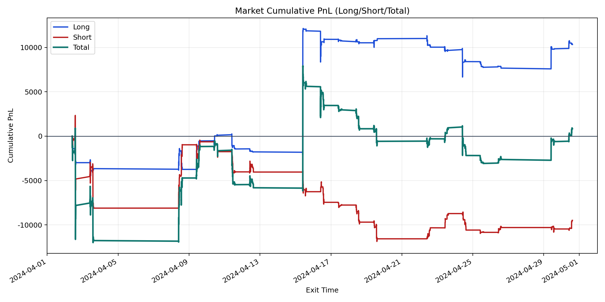
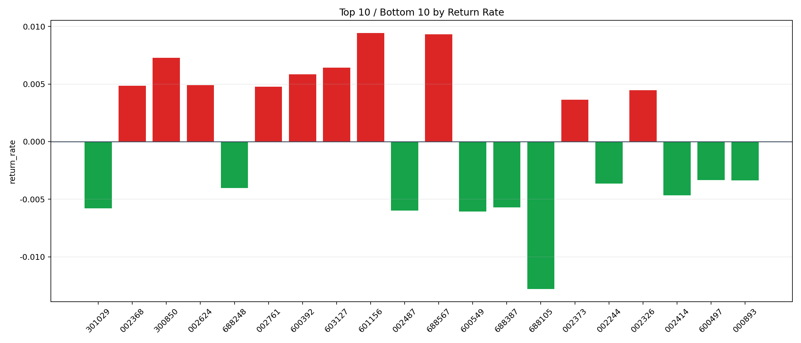

| repo_root | /home/haoranyou/data/output/alpha0.4_1w_5s_3ticks_index_filter/index_weights_500 |
|---|---|
| period_months | 1 |
| period_label | 2024-04-02_to_2024-04-30 |
| start_time | 2024-04-02 09:50:22 |
| end_time | 2024-04-30 14:45:02 |
| n_trades | 4279 |
| n_symbols | 76 |
| total_pnl | 846.8534499999284 |
| long_total_pnl | 10334.130600000037 |
| short_total_pnl | -9487.277150000104 |
| total_entry_notional | 39343466.0 |
| long_entry_notional | 15538828.0 |
| short_entry_notional | 23804638.0 |
| total_return_rate | 2.152462749468815e-05 |
| long_return_rate | 0.0006650521261963925 |
| short_return_rate | -0.00039854742382556304 |
| top_symbols_by_return | ["601156", "688567", "300850", "603127", "600392", "002624", "002368", "002761", "002326", "002373"] |
| bottom_symbols_by_return | ["688105", "600549", "002487", "301029", "688387", "002414", "688248", "002244", "000893", "600497"] |

